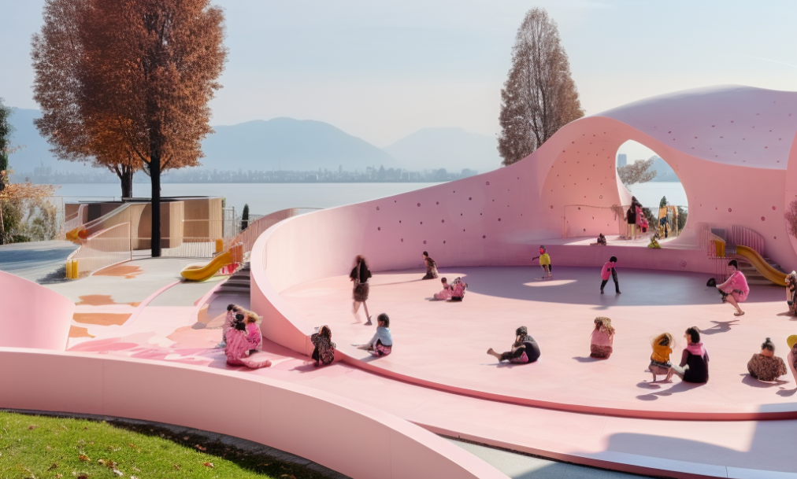
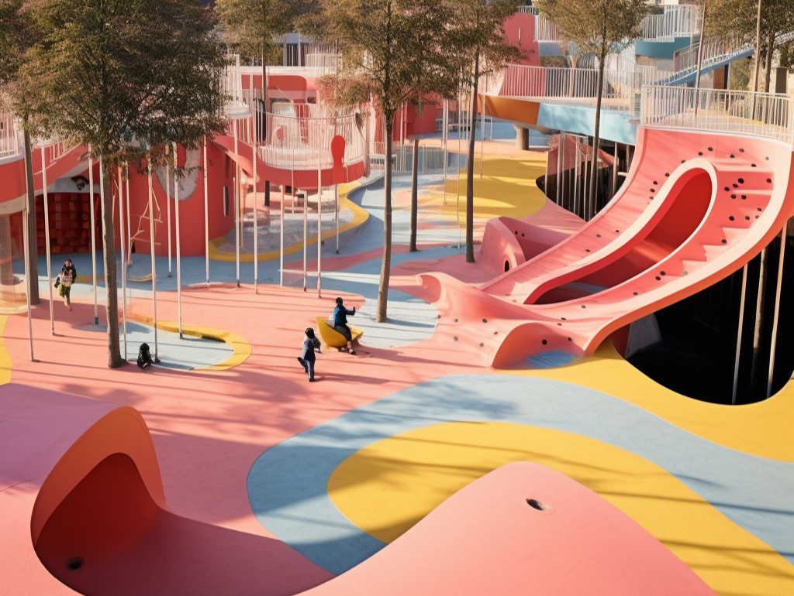
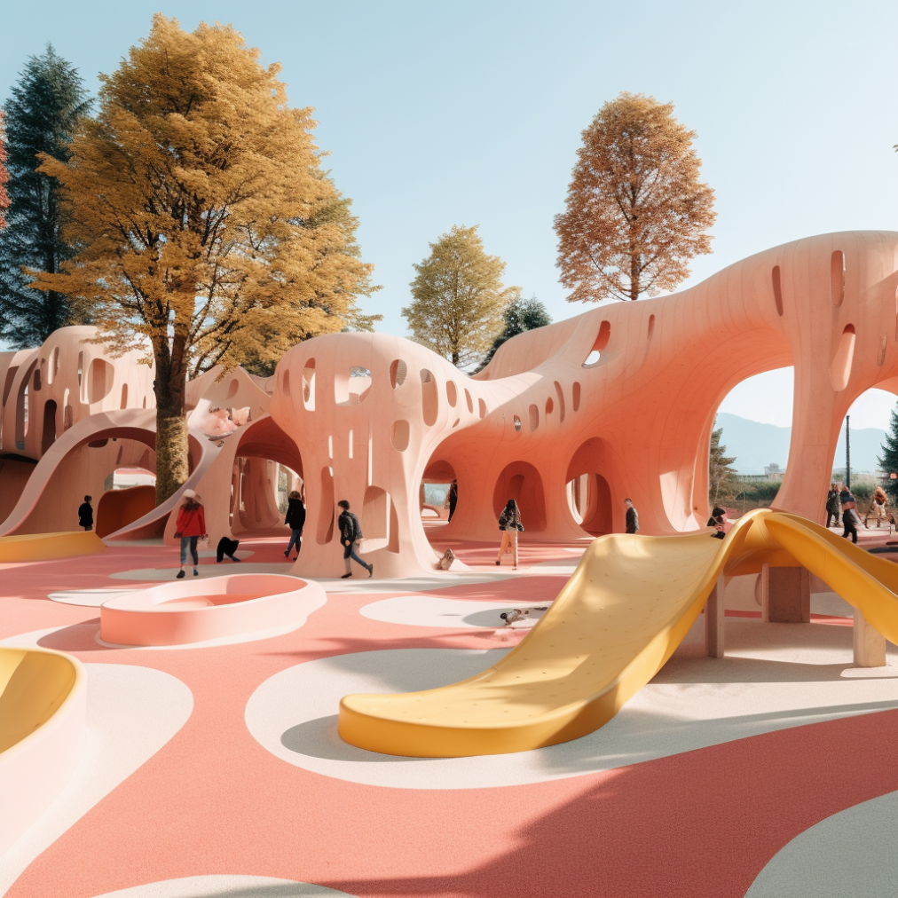

I have the last project to share with you called Pink Land. Pink Land is a special place where kids and teens (our users) can make up their own games, relax, and talk to each other.
My team and I created this concept through various trials in the collage, incorporating shapes, elements of nature, and some existing playground solutions.

The picture you see now is the result of blending the abandoned space near Vidy in Lausanne. Its open design encourages creativity and exploration, providing a canvas for children to imagine and create their own games. Parents can find tranquility in its welcoming ambiance, and teenagers have a cool hangout spot to socialize and enjoy their leisure time.
The intentional combination of simple forms, nature elements, and playground solutions contributes to a delightful experience.
Imagine your mind as a big, exciting playground where you can let your imagination run wild. What it will look like?
This is mine perfect playground. The complexity of it encourages you to feel more power and interest to play with it. Because I know that there are even more outside of the picture. It's like solving a puzzle or embarking on a thrilling adventure, where each twist and turn leads to new insights and discoveries.
In this atmosphere, people can work together and share ideas. The complexity is like a bridge that brings minds together, creating a feeling of community and shared discovery. By teaming up, people can explore new ideas and go beyond what is already known into exciting, unexplored areas of imagination.

Sometimes we need more that our imagination provides. We need more space, more realistic shapes to have a safe game, less sharp objects and so on. The cool part is that everyone's playground is different, and we can all share and learn from each other, making the whole experience even better. But ...
But our imagination can indeed go to far from our needs, which can make us as happy. That is the responsibilities of architects - to find the solution that will fit for majority and make everyone happier.

.png)
.png)
.png)
.png)
.png)
.png)
.png)
.png)